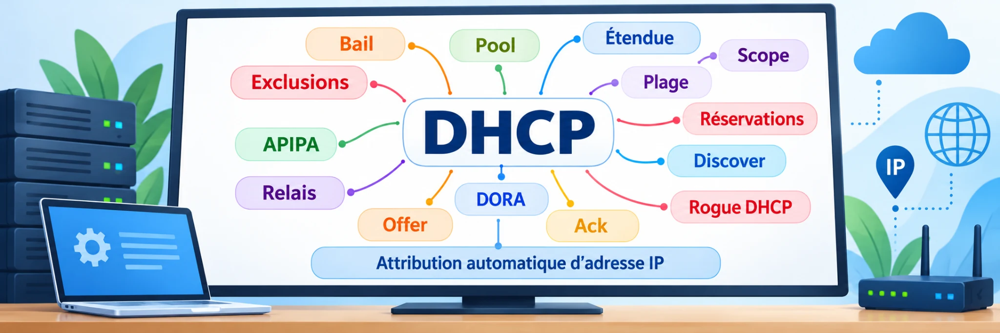

1. À quoi sert le DHCP ?
Un serveur DHCP permet à un appareil d'obtenir automatiquement sa configuration réseau, notamment une adresse IPv4, un masque de sous-réseau et un bail (durée pendant laquelle l'adresse lui est attribuée).
Il peut aussi fournir des options DHCP, comme l'adresse de la passerelle et celle des serveurs DNS. D'autres options existent selon les besoins du réseau.
Observer une configuration réelle
Sur un PC Windows, la commande ipconfig /all affiche ces informations. Voici un extrait de la configuration de REN-PC-01 :
C:\Users\chaoli>ipconfig /all
Configuration IP de Windows
Nom de l’hôte . . . . . . . . . . : REN-PC-01
Carte Ethernet Ethernet :
DHCP activé. . . . . . . . . . . : Oui
Configuration automatique activée : Oui
Adresse IPv4. . . . . . . . . . . : 192.168.1.26 (préféré)
Masque de sous-réseau . . . . . . : 255.255.255.0
Bail obtenu. . . . . . . . . . . : dimanche 18 octobre 2026 08:34:38
Bail expirant. . . . . . . . . . : lundi 19 octobre 2026 19:32:52
Passerelle par défaut. . . . . . : 192.168.1.1
Serveur DHCP . . . . . . . . . . : 192.168.1.1
Serveurs DNS. . . . . . . . . . . : 192.168.1.1
8.8.8.8
1.1.1.1Comment lire cette configuration ? « DHCP activé : Oui » indique que la carte réseau est configurée pour utiliser DHCP. « Serveur DHCP » désigne l'équipement qui lui a attribué sa configuration. Les dates du bail indiquent quand l'adresse a été obtenue et quand son bail arrive à expiration.
www.education.gouv.fr. Un PC peut donc avoir une adresse IPv4 correcte et rencontrer quand même des difficultés si l'un de ces paramètres est absent ou erroné.Je me teste
Utilise la sortie ipconfig /all ci-dessus pour répondre. Cherche les informations comme le ferait un technicien.
2. Le bail et les quatre messages DORA
Une adresse attribuée par DHCP est prêtée pour une durée : c'est le bail DHCP.
PC → DHCP : DISCOVER DHCP → PC : OFFER PC → DHCP : REQUEST DHCP → PC : ACK
Le bail peut être renouvelé. Le DHCP évite de configurer chaque PC manuellement.
Je me teste
Choisis une réponse pour chaque situation.
3. Plage, exclusion et réservation
La plage contient les adresses distribuables. Une exclusion empêche l'attribution d'une adresse. Une réservation associe une adresse à la carte réseau d'un appareil.
192.168.20.0/24Plage :
192.168.20.50 à 192.168.20.200Exclusion :
192.168.20.120 (photocopieur)Réservation :
PC-ACCUEIL reçoit toujours 192.168.20.60.Je me teste
Choisis une réponse pour chaque situation.
4. Les options DHCP
Les options complètent l'adresse IP. Retenir surtout 3 = passerelle, 6 = DNS et 51 = durée du bail.
Adresse IPv4 : 192.168.20.54 Masque : 255.255.255.0 Option 3 : 192.168.20.1 Option 6 : 192.168.20.10 Option 51 : 86400 secondes
Une mauvaise option peut bloquer Internet ou la résolution des noms, même si l'adresse IPv4 est correcte.
Je me teste
Choisis une réponse pour chaque situation.
5. VLAN et relais DHCP
Les messages DHCP initiaux ne traversent pas seuls les routeurs entre VLAN. Un relais DHCP (IP Helper) peut transférer les demandes vers un serveur situé dans un autre réseau.
Je me teste
Choisis une réponse pour chaque situation.
6. APIPA et dépannage
Une adresse 169.254.x.x indique que le PC n'a pas obtenu sa configuration DHCP habituelle. Le technicien vérifie le câble, le VLAN, le serveur et le relais DHCP.
Carte Ethernet : IPv4 169.254.28.74 Masque 255.255.0.0 Passerelle (absente)
Une adresse APIPA peut permettre certains échanges locaux, mais pas l'accès normal au réseau de l'entreprise.
Je me teste
Choisis une réponse pour chaque situation.
7. Incidents DHCP : agir comme un technicien
Lis le symptôme puis choisis le contrôle le plus pertinent.
Je me teste
Choisis une réponse pour chaque situation.